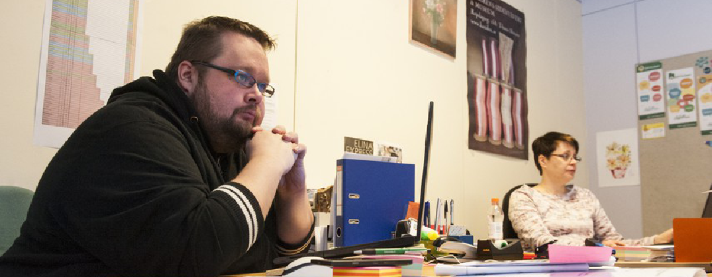

Tietoa Yhdistyksesta
Kouvolan Korttelikotiyhdistys ry.
Yleishyödyllinen voittoa tavoittelematon järjestö, joka tarjoaa mm. työmahdollisuuksia ja korttelikotitoimintaa eri kävijäkunnille. Yhdistys on rekisteröity helmikuussa 2008.
Yhteenveto
Korttelikodin ovet ovat auki kaikille ja tarkoituksena on kehittää ja monipuolistaa korttelikodeilla tapahtuvaa toimintaa paikallisten asukkaiden toiveiden mukaisesti. Tällä hetkellä jokaisella Korttelikodilla on viikko–ohjelma, joka pitää sisällään mm. ulkoilua, bingoa, käsitöitä, ulkopelejä ja sisäpelejä. Tavoitteena on järjestää tarpeen ja toiveiden mukaan erilaisia asiakkaiden tarpeita palvelevia retkiä ja teemapäiviä jotka voivat liittyä esimerkiksi hyvinvointiin, kierrätykseen, kasvojen hoitoon, lasten tapahtumiin jne.
Korttelikodin tärkeä tehtävä on tarjota asiakkailleen yhteinen paikka, olohuone tai kahvihuone, jossa voi pistäytyä tai viettää aikaa. Paikalla on aina korttelikodin henkilökuntaa, jolla on aikaa istua, jutella ja juoda seuraksi kuppi kahvia. Korttelikodilla tuoksuu usein vastaleivottu pulla ja ilmapiiri on kodinomainen.
Henkilökunta
Työyhteisömme on hyvin monipuolista, edustamme moniammatillista ja monikulttuurillista työympäristöä. Työntekijämme ovat töissä erilaisilla tukimuodoilla, joita ovat (korkein korotettu) palkkatuki, työkokeilu, kuntouttava työtoiminta ja avotyötoiminta. Kouvolan Korttelikodit toimivat välityömarkkinoina Kouvolan alueella, joten työssä käynnin ohella työntekijöiden kanssa kartoitetaan tulevaisuuden suunnitelmia ja mahdollisia työ – tai koulutuspaikkoja. Lisäksi Korttelikodeilla on opiskelijoita suorittamassa työssäoppimisjaksoja sekä mahdollisesti näyttöjä.
Hallitus
Kouvolan Korttelikotiyhdistyksen hallitus koostuu moniammatillisesta ryhmästä Korttelikotien toiminnan kehittämisestä ja vastaamisesta kiinnostuneita henkilöitä. Hallitus on koottu eri alojen osaajista, joiden tietotaito ja kokemukset työ- ja järjestöelämästä tuovat arvokkaan ja tärkeän lisän Korttelikotien toiminnan järjestämiseen ja jatkuvaan kehitykseen sekä ylläpitämiseen.
Yhdistyksen tarkoitus on tukea asukkaiden alueellista toimintaa omassa asuinympäristössään. Yhdistys on uskonnollisesti ja poliittisesti sitoutumaton sekä voittoa tavoittelematon. Yhdistyksen tarkoituksena on kehittää asuinaluetta yhdessä asukkaiden, viranomaisten, päättäjien ja elinkeinoelämän kanssa kestävän kehityksen hengessä.
Kouvolan Korttelikotiyhdistys ry:n vuoden 2018 hallitus
Puheenjohtaja
Katja Valkeinen
puh. 040 744 9439
katja.valkeinen@gmail.com
Varapuheenjohtaja
Riina Ahonen
Jäsenet
Tuomo Saarinen
Satu Kurri
Sanna Taimisto
Minna Pennanen
Riitta Järvinen
Teija Tulokas
Jaana Lehtilä
Varajäsenet
Berit Mäntykenttä
Kati Saine